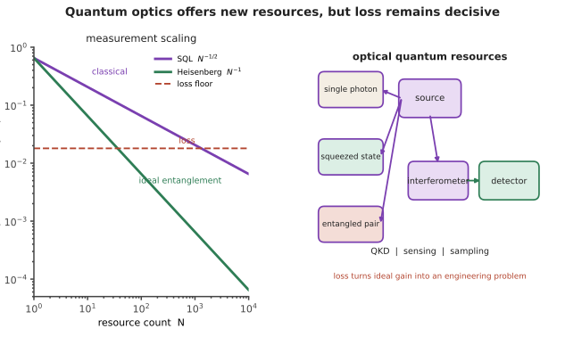

前沿 II · 光计算与量子光学
核对于 2026-07 ｜ 证据地位：物理原理【实】；光计算的实用前景【争】；量子优势的解释【争】。🔗 与物理站量子信息线、cs 站、AI 站互链。 两个极具诱惑的方向。第四页说过"一枚透镜以光速零功耗完成傅里叶变换"——那么为什么不用光来计算？而量子光学则把光的量子性质变成资源。本页讲清它们的原理、真实进展，以及为什么它们至今没有取代电子计算。

一、光计算：诱惑与障碍
诱惑非常真实（承第四页）：
- 并行性：整个二维波前同时传播；
- 速度：光速传播，无 RC 延迟（🔗 微电子站第六页：互连延迟是电子学的瓶颈）；
- 无源运算的低功耗：透镜做傅里叶变换本身不耗能；
- 矩阵乘法天然：MZI 网格可实现任意幺正变换，光通过即完成矩阵-向量乘。
这对以矩阵乘法为主的神经网络推理极具吸引力（🔗 AI 站、微电子站第十六页的存内计算是同一动机）。
但障碍同样真实——它们与微电子站第十六页讨论存内计算时的障碍高度相似：
① 电光/光电转换的开销。 数据要变成光、算完要变回电。转换的功耗与延迟常常吃掉光学部分节省的一切——这是所有光计算方案的第一道坎。
② 精度有限。 模拟光学计算受噪声、串扰、器件误差限制，有效精度通常只有 4–8 位。而神经网络训练需要更高精度（推理可低精度，这是唯一的机会窗口）。
③ 非线性极难。 神经网络需要非线性激活函数，而光学非线性弱且需要高功率（第十四页）。现有方案多数在电域做非线性 → 又回到转换开销。
④ 存储与可编程性。 光没有天然的存储；权重更新（尤其训练）代价高。
⑤ 与移动的靶子竞争。 数字加速器（🔗 微电子站第十七页）在持续进步，光计算必须打败的是一个每年都在变强的对手。
当前较可信的定位：
- 光互连（而非光计算）是真正落地的部分——CPO、光学 I/O（第十三、十五页）；
- 特定窄场景的光学加速（如固定权重的卷积、光学预处理）；
- 光学储备池计算、伊辛机（组合优化）有专门场景；
- 通用光学 AI 加速器仍处早期【争】。
判读此类工作的问题：算不算电光转换的能耗？是端到端还是仅光学部分？精度损失多少？与同期数字加速器的公平对比如何？ ——与微电子站第十六页那份清单完全一致。
二、量子光学的基本资源
光的量子性质提供了经典物理没有的资源：
① 单光子与光子统计：
- 相干态（激光）：光子数服从泊松分布 → 这正是散粒噪声的来源（第九页）；
-
压缩态：把噪声从一个正交分量"挤"到另一个 → 可在某个量度上突破散粒噪声极限。 这已经在引力波探测器中实用化——注入压缩光提高了探测灵敏度。这是量子光学最扎实的工程应用之一；
-
单光子源：量子点、色心、参量下转换。
② 纠缠：参量下转换产生的纠缠光子对，是量子通信与计算的基础资源。
③ 量子测量的极限：
- 标准量子极限（SQL）：\(\Delta\phi \sim 1/\sqrt{N}\)（经典）；
- 海森堡极限：\(\Delta\phi\sim 1/N\)（利用纠缠）。理论上可显著提升精密测量灵敏度，但对损耗极其敏感——这是量子计量的核心困难。
三、量子通信
量子密钥分发（QKD）：利用量子态不可克隆，窃听必然引入可检测的扰动。
- BB84 等协议已有商用系统与城域网、卫星实验；
- 优势：安全性基于物理定律而非计算复杂度；
- 必须诚实指出的限制：
- QKD 只分发密钥，实际通信仍用对称加密；
- 速率随距离指数下降（光子损耗），且无法用经典中继放大（不可克隆）；
- 量子中继与量子存储尚不成熟，这是长距 QKD 的根本瓶颈；
- 实际系统的安全性取决于器件的实现——已有多起针对探测器等侧信道的攻击演示。"理论上无条件安全"不等于"实际系统安全"；
- 与后量子密码（PQC）的竞争：PQC 是纯软件方案、可直接部署、成本低。多数密码学界人士认为 PQC 是应对量子威胁的主要路径，QKD 适用于特定高价值场景【争】。
四、光量子计算
优势：光子退相干弱、可室温工作、可用成熟光子集成工艺（第十五页）。
困难：光子之间几乎不相互作用 → 难以实现两比特门。
主要路线：
- 线性光学量子计算（KLM）：用测量诱导非线性，但需要大量辅助光子与极高效率的单光子源和探测器；
- 测量式/簇态量子计算：先制备大规模纠缠态再逐个测量；
- 连续变量（压缩态）：可确定性产生大规模纠缠，但需要压缩度足够高；
- 玻色采样：不是通用计算，而是一个特定的采样问题。
关于"量子优势"实验的诚实说明：多个团队报告了光量子采样实验声称超越经典模拟能力。这些是重要的实验成就，但需要注意：
- 经典模拟算法在随后被不断改进，若干原先的优势主张被削弱或推翻——这是一个持续的攻防过程；
- 玻色采样本身没有已知的实用价值；
- 距离容错的通用量子计算仍很遥远（需要纠错，而光子的纠错开销巨大）。
本课立场：物理与工程成就是真实的；"量子计算即将改变一切"的叙事则远超证据。 标【争】。
五、一个贯穿的判读模式
本页两个主题与本讲义库其他站的前沿页共享同一个模式：
| 方向 | 原理成立？ | 卡在哪里 |
|---|---|---|
| 光计算 | 是 | 转换开销、精度、非线性、对手在进步 |
| 超表面替代透镜（第十八页） | 是 | 效率、带宽、与廉价非球面竞争 |
| 存内计算（🔗 微电子） | 是 | ADC 开销、精度、端到端收益 |
| TFET/NC-FET（🔗 微电子） | 部分 | 电流不足、稳定性 |
| \(H_\infty\) 控制（🔗 自动化） | 是 | 阶数高、难维护、保守 |
| QKD | 是 | 速率、距离、侧信道、PQC 竞争 |
共同教训：一项新技术要取代成熟方案，必须同时打败它的性能、成本、生态与可制造性——而最后两项通常才是决定性的。 这是本讲义库工科各站反复出现、也最值得带走的判断框架。
六、要点
- 光计算的诱惑真实（并行、光速、无源矩阵乘），但转换开销、精度、非线性是硬障碍；光互连才是已落地的部分；
- 压缩态已在引力波探测中实用化，是量子光学最扎实的工程应用；
- QKD 的限制：只分密钥、速率随距离指数下降、无法经典中继、侧信道攻击、与 PQC 竞争；
- 光子几乎不相互作用是光量子计算最大的困难；
- 量子优势实验是真实成就，但经典模拟在持续追赶，且距实用容错计算仍远；
- "原理成立但打不过成熟对手"是所有前沿技术的共同考验。
下一页：本线最后一站——这个行业的产业形态与本硕博的实际去向。